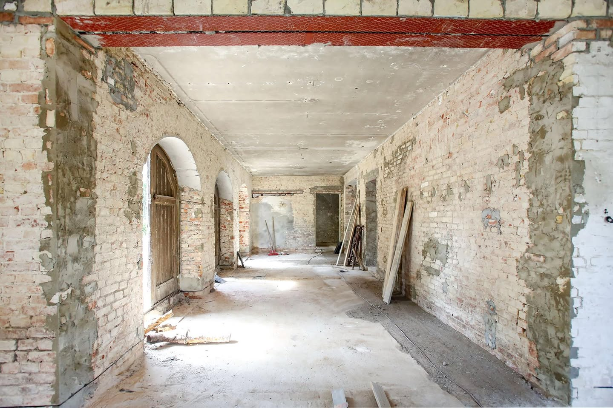
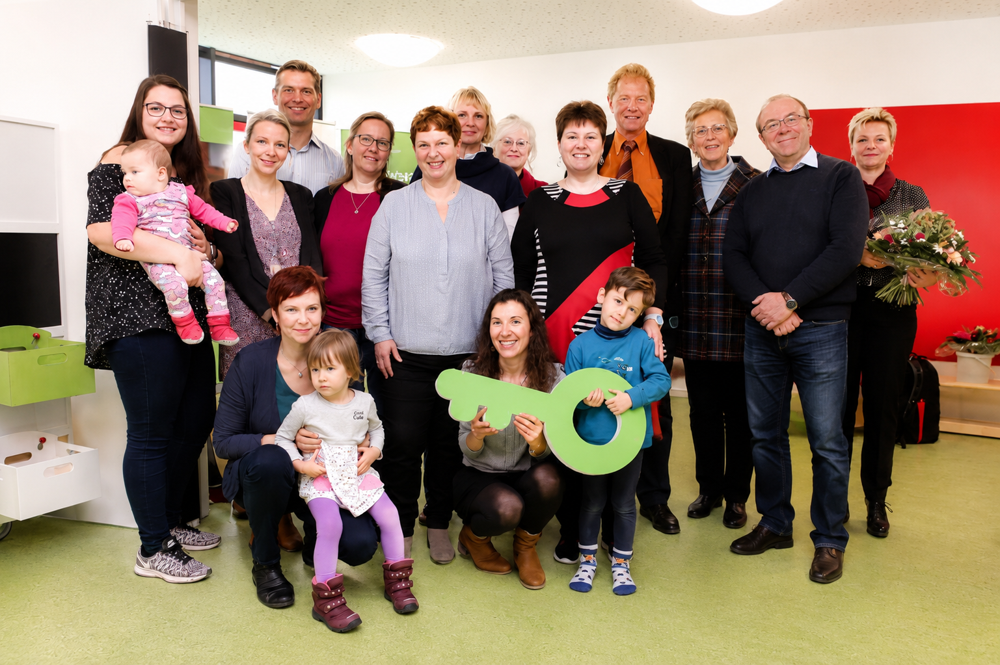

Die Idee entstand nicht in einer Vorstandssitzung und auch nicht bei einem Gespräch mit Architekten. Sie entstand bei der Personalplanung. Denn immer wieder fiel mir auf, dass viele meiner jungen Ärztinnen nur in Teilzeit arbeiten wollten. Irgendwann fragte ich nach.
„Warum möchten Sie eigentlich nicht Vollzeit arbeiten?“
Die Antwort war fast immer dieselbe.
„Wegen der Kinder.“
Viele teilten sich die Betreuung mit ihrem Partner. Großeltern lebten häufig weit entfernt, private Betreuung war teuer und Kindergartenplätze waren damals längst nicht so selbstverständlich wie heute. Für die Familien bedeutete das einen täglichen Spagat. Für die Klinik bedeutete es, dass hervorragend ausgebildete Ärztinnen ihre Arbeitszeit reduzieren mussten. Ich dachte damals: Eigentlich fehlt uns gar kein Arzt. Uns fehlt ein Kindergarten.
Der Gedanke ließ mich nicht mehr los. Also begann ich, wie so oft, selbst über das Klinikgelände zu laufen. Irgendwo musste sich doch ein geeigneter Platz finden. Dabei fiel mir ein altes Stallgebäude an der Lindenberger Allee auf. Früher waren dort tatsächlich Pferde untergebracht gewesen. Das Gebäude hatte Charme, war für einen modernen Kindergarten aber eigentlich zu klein.
Trotzdem ließ mich die Idee nicht los. Ich ging zunächst in den kommunalen Kindergarten am Lindenberger Weg und sprach mit der Leiterin. Vielleicht ließ sich gemeinsam etwas entwickeln. Die Gespräche verliefen allerdings eher unerquicklich. Zuständigkeiten, Vorschriften und Bedenken standen schnell im Vordergrund. Am Ende blieb alles beim Alten. Damit verschwand die Idee erst einmal wieder in der Schublade.
Als später Mate Ivancic Geschäftsführer wurde, griff ich das Thema erneut auf. Gemeinsam schauten wir uns das Gelände an und überlegten verschiedene Möglichkeiten. Wir diskutierten, rechneten und entwickelten erste Vorstellungen. Doch auch diesmal kam das Projekt nicht entscheidend voran. Es fehlte nicht am guten Willen, sondern an den vielen kleinen Hindernissen, an denen große Vorhaben oft scheitern.
Erst mit Sebastian Heumüller bekam die Idee neuen Schwung. Er erkannte sofort, dass ein Betriebskindergarten nicht nur eine soziale Einrichtung war, sondern auch ein wichtiges Argument im Wettbewerb um qualifizierte Mitarbeiter. Während ich in erster Linie an meine Ärztinnen, Pflegerinnen und Pfleger dachte, sah er zusätzlich den Vorteil für das gesamte Klinikum. Beides ergänzte sich hervorragend.

Während wir über den Kindergarten sprachen, wurde mir plötzlich klar, dass wir damit noch ein zweites Problem lösen konnten. Die Eltern unserer krebskranken Kinder standen oft vor einer fast unlösbaren Situation. Sie wollten Tag und Nacht bei ihrem schwer kranken Kind bleiben. Gleichzeitig warteten zu Hause gesunde Geschwister, die ebenfalls Betreuung brauchten. Viele Familien zerrissen sich förmlich zwischen Krankenhaus und Zuhause.
Warum also nicht einen Teil des Kindergartens für diese Geschwisterkinder vorsehen? Die Idee fand rasch Zustimmung. Während Mutter oder Vater beim kranken Kind auf der Station bleiben konnten, sollten die Geschwister ganz in der Nähe spielen, malen oder einfach einen normalen Kindergartentag erleben. Das nahm den Eltern einen Teil ihrer Sorgen und gab auch den Geschwistern ein Stück Normalität zurück.
Schließlich fanden wir mit Fröbel einen erfahrenen Träger, der das Projekt übernahm. Das alte Stallgebäude blieb erhalten, wurde vollständig saniert und durch einen modernen Neubau ergänzt. Davor entstand ein großer Spielplatz. Für den Bereich der Geschwisterkinder mussten allerdings zusätzliches Personal und eine besondere Ausstattung finanziert werden.

Auch diesmal halfen wieder Menschen und Stiftungen, die unsere Ideen unterstützten. Die Eduard-Winter-Stiftung und Ein Herz für Kinder stellten die notwendigen Spendengelder zur Verfügung. Dadurch konnten wir die Betreuung der Geschwister langfristig sichern.
Heute wirkt der Kindergarten auf dem Gelände des Helios Klinikums Berlin-Buch völlig selbstverständlich. Die meisten Besucher sehen einfach einen modernen Kindergarten mit spielenden Kindern. Kaum jemand ahnt, dass hinter diesem Gebäude eigentlich zwei Ideen stecken: junge Familien dabei zu unterstützen, Beruf und Familie besser miteinander zu vereinbaren, und gleichzeitig Eltern schwer kranker Kinder die Möglichkeit zu geben, bei ihrem Kind zu bleiben, ohne sich ständig Sorgen um die Geschwister machen zu müssen. Genau diese Verbindung hat mir an dem Projekt von Anfang an gefallen.